I made a character list detailing every character here. I got some feedback it can be hard to keep track. Let me know if this helps!
Previous newsletters
If you want to see any of the previous newsletters look here
Shoutouts
Major shoutout to “The Doctor” for getting a faculty offer at the AITHYRA institute in Vienna! I’m now upgrading your nickname to be “The Professor”!! Super excited to see the cool stuff you do next! I know its been super stressful with all the traveling, interviewing, and of course the political climate being super sucky to sciences. In spite of all that though you have a prof job which is amazing!!
Monday
Today I just went to work and chilled at home. I debated going to chess club but decided against it this week.
Tuesday
See Monday.
Wednesday
Today after work was Midnight Runners. My throat was a bit sore so I opted to walk along the route and catch up with the runners at a couple of the stops. Afters we did the post run hang over at Kezar’s pub near GGP. I sit at a table with some of my friends and when the waitress comes by I don’t order anything which prompts her to ask me to not sit at a table. To get around this I stand by the table the whole time, with a part of me hoping she comes by again so I can explain this to her but unfortunately she doesn’t come back.
Thursday
I have the day off for Juneteenth so me and “The Quant” go on a hike from Crissy Fields up to Engagement Hill over in The Marin Headlands. “Granola Girlie”, since you said you wanted pictures here they are
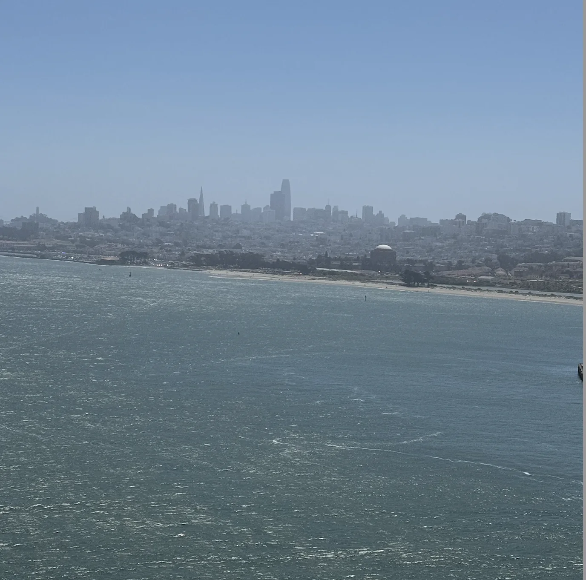
After the hike I walked around in Divisadero where I found this amazing poster
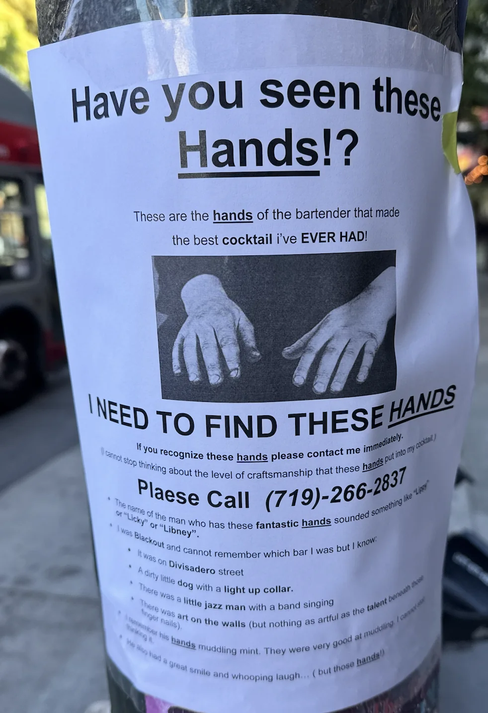
Honestly I think it speaks for itself really.
Friday
Today after work I attempted to do one of the bits from my bit jar of finding every body of water in Golden Gate Park. I started East and worked my way West hitting Lily Pond -> The fountains near the Music Concourse -> The fountain near the DeYoung
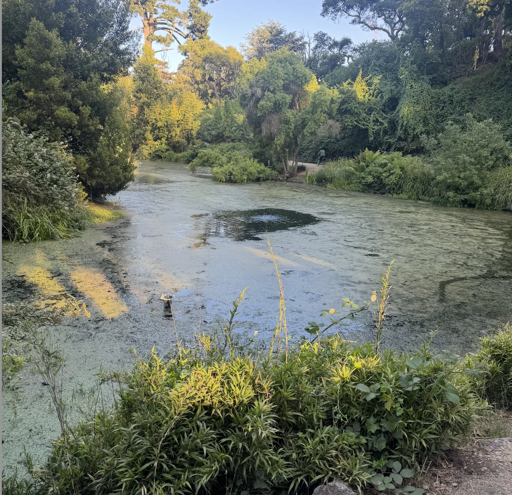
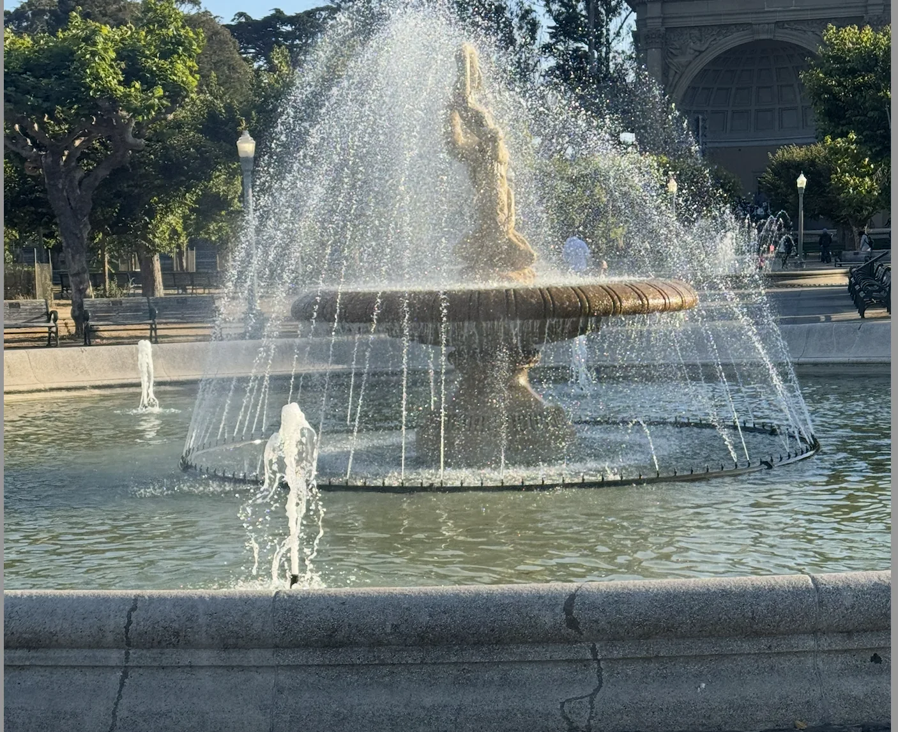
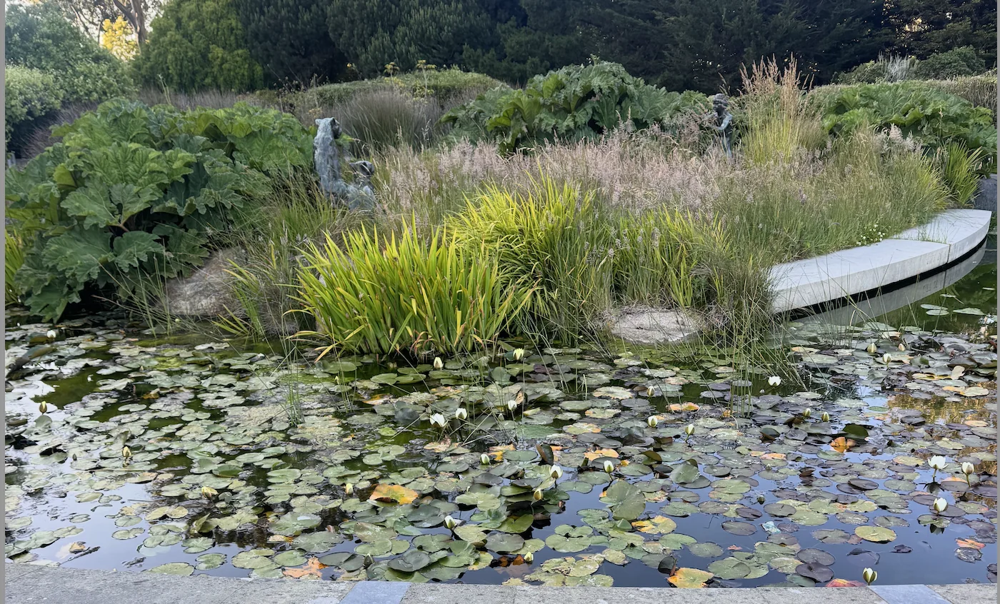
I was going to hit up a lake over in the Botanical Gardens next but by the time I got there they already closed. So I stopped and decided to finish the bit tomorrow.
Saturday
Today begins with trash pickup as per usual. Today we have “The notetaker”, “The writer”, and “Granola Girlie”. “Granola Girlie” brought her family with her which has now 4xd the number of people I’ve met from Wyoming.
After trash pickup I resume my bit and go back to Golden Gate Park to find the other bodies of water. I go from Waterfowl pond -> Blue Heron lake -> Strawberry Hill lake -> Lloyd lake -> Elk Glen lake -> Mallard lake -> Metson lake -> The Golden Gate Angling and Casting club -> Spreckels lake -> North lake -> Middle lake -> South lake
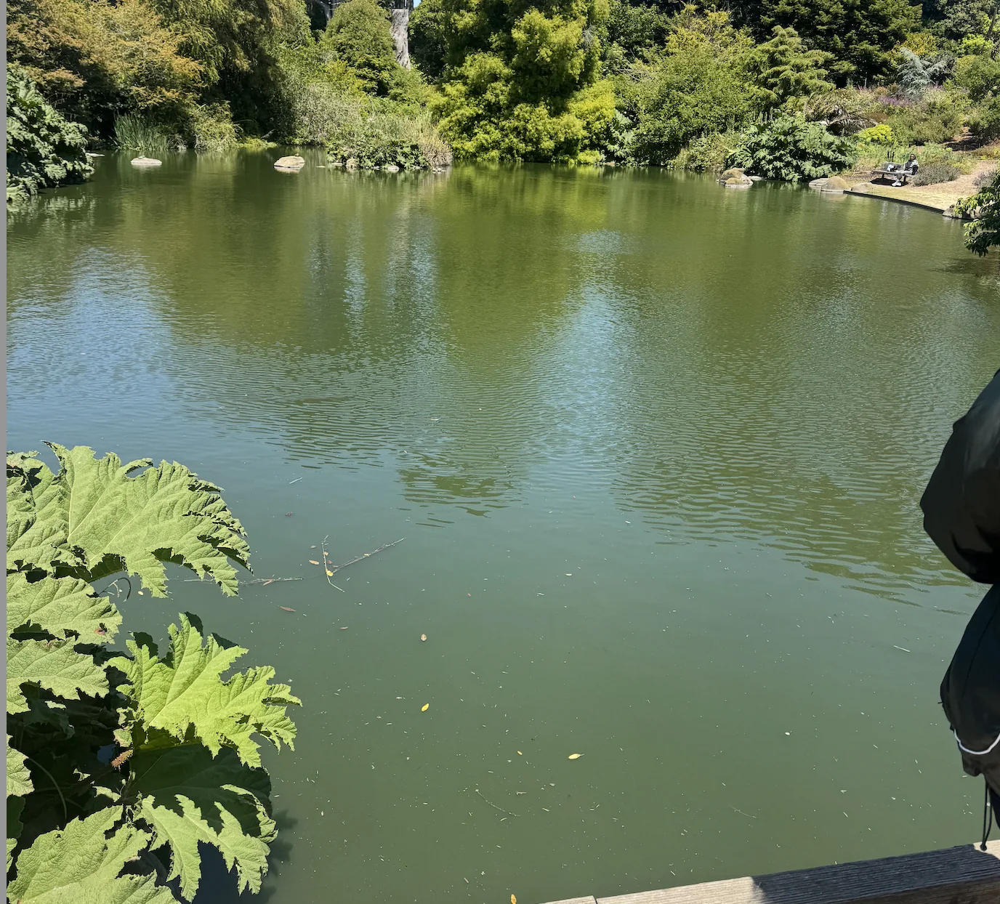
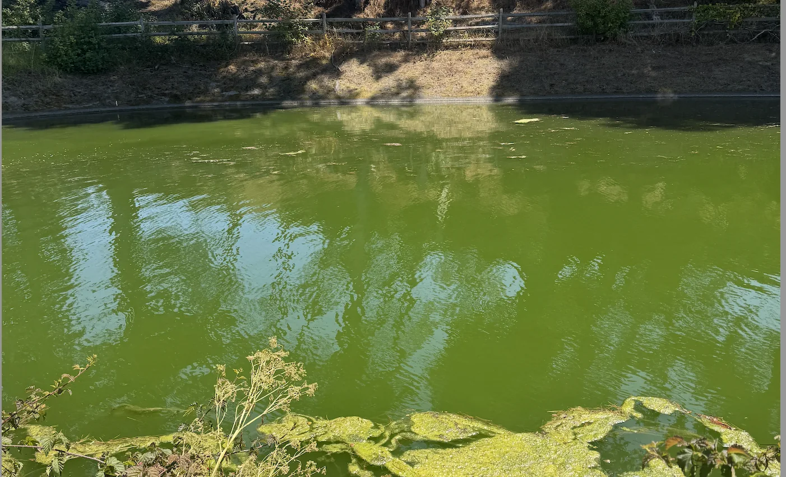
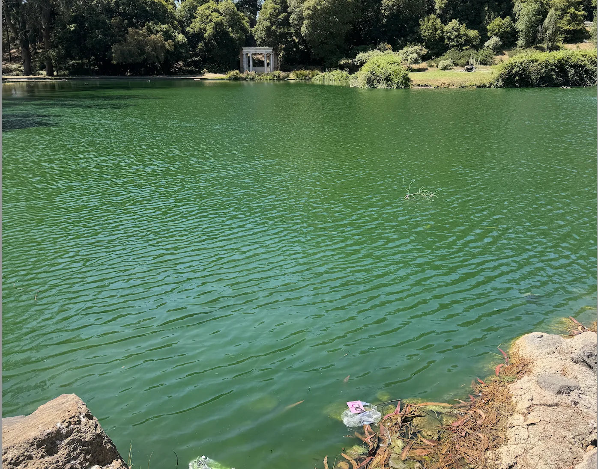
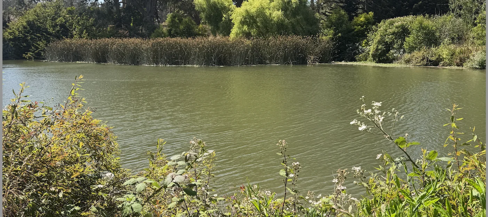
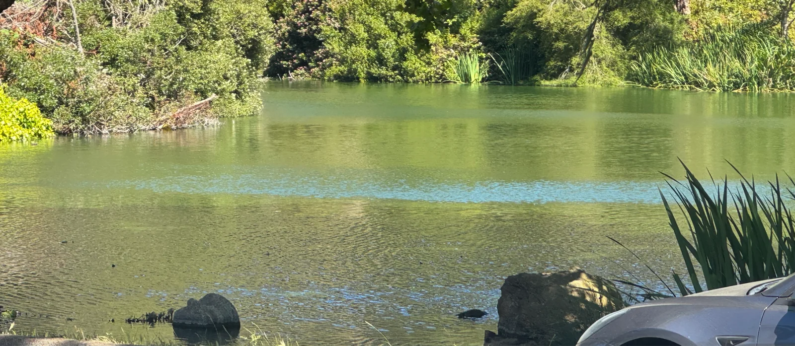
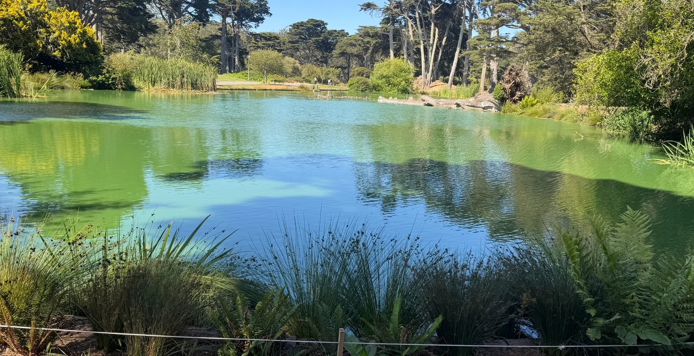
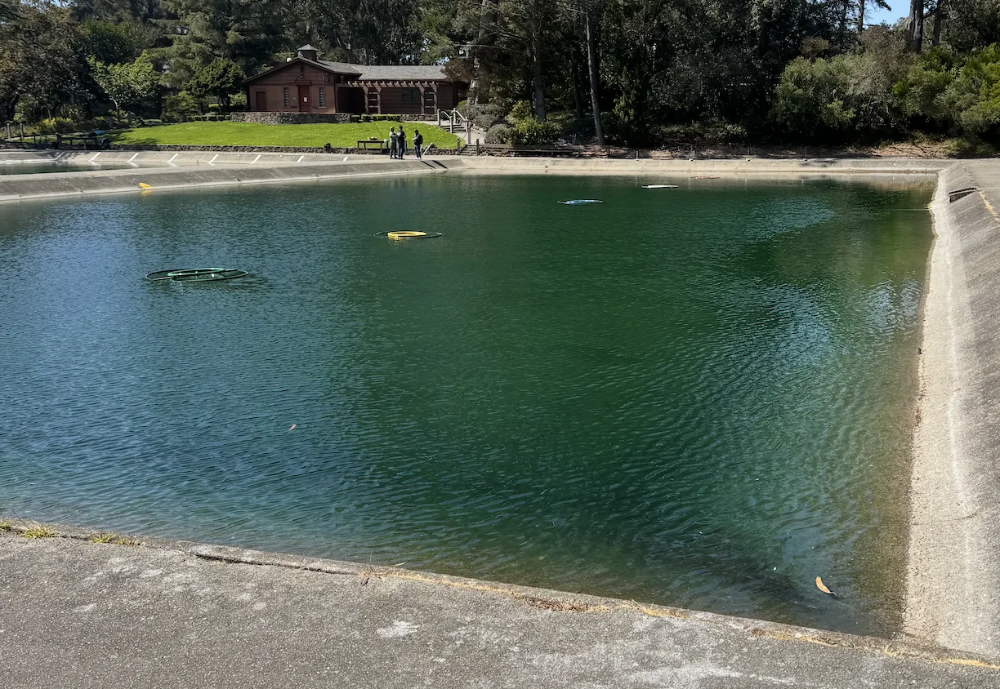
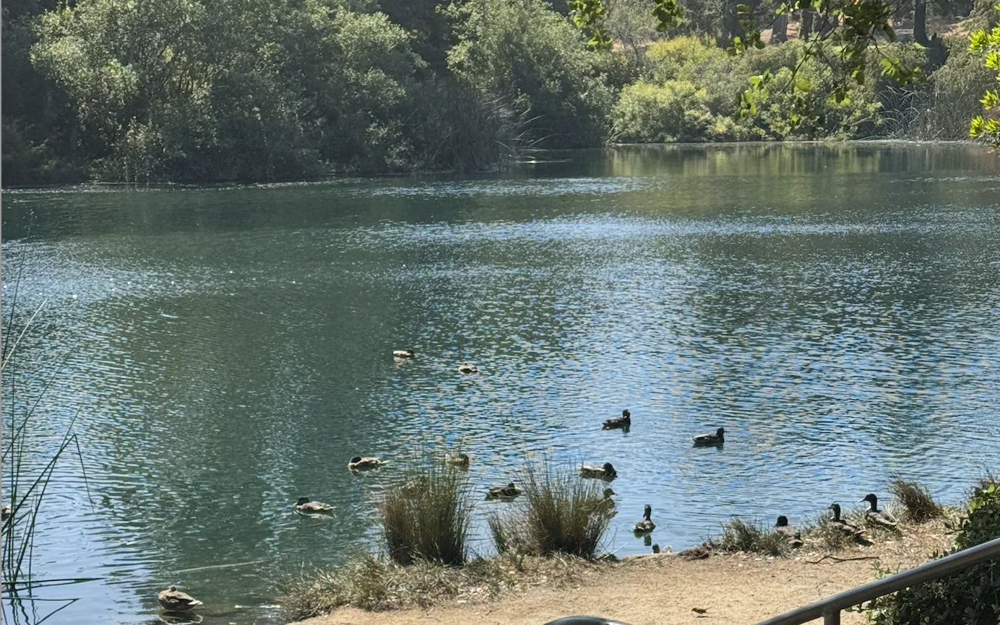
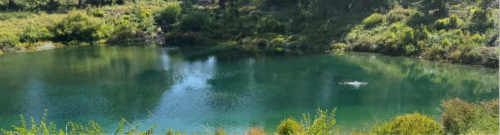
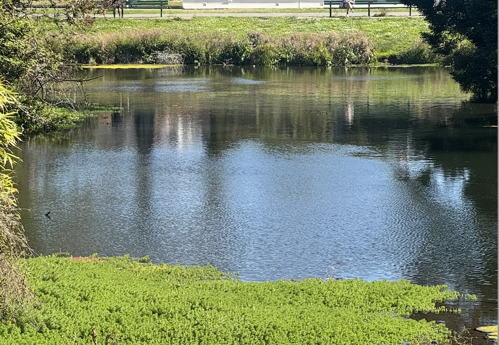
At one point when I’m going between Lloyd Lake and Elk Glen lake some woman stops me and asks me where Hellman Hollow is as she is trying to find a friends birthday party. After pointing it out to her she tells me that she lost her phone and wanted to use my phone to help find hers. I didn’t get suspicious vibes from her so I let her borrow it while I stared at the sky and thought about life.
We get to talking after a little while and I learn that she grew up in the city and works at an Insurance company answering calls. I asked her if she is like a good neighbor and apparently she does work at State Farm. For whatever reason I try to see how much of her I can predict based off her vibes and I’m able to get the following correct
She is an introvert with about 6-10 friends
Her main hobbies are reading with a little bit of art
She plays videogames (I thought she played more than she did though as she said shes starting to get into it)
The friend whose birthday party it is is someone she met in highschool
Shes not super active but does do something like the gym once a week (it was actually pilates but I’m counting this)
Eventually she decides to just head home and skip her friends birthday party while she sorts out her whole phone situation. She did say she’d be down to hang out and we do exchange numbers so we shall see if I make a new friend from this. I order her an Uber since she can’t call one herself and as she leaves I ask her to “take a picture of me” (aka hand her a picture of me that I have) for the bit.
Once I finish up my lake bit I head home and quickly get the Humza cave ready for boardgame night.
For boardgame night I’m joined by “The Raja of Rhythm,” “The pickleballer,” “The Yogi,” “The Quant,” and one of “The Yogi’s” friends. We play a game called Munchkin which is quite fun. Essentially the idea is everyone is in a dungeon trying to level up by fighting monsters. When you kill a monster you gain a level and the first person to get to level 10 wins.
What makes the game interesting is when you fight a monster other players can come in and either help you or help the monster. In the beginning players are more likely to help each other to split rewards and get stronger faster. But towards the endgame people will help the monster to ensure someone other than them doesn’t reach level 10.
The endgame was absolutely brutal as we spent at least an hour with everyone on level 9 trying to stop whoevers turn it was from reaching level 10. I had one of the best characters for helping to drag everyone else down which turned the game into a battle of attrition. After around 3 hours of playing the game we were all pretty beat but eventually a pair of winners did emerge (a bit complicated to explain how multiple people can win but just know it can happen). I still think I deserve an honorary win for all I did to keep the game going for so long.
Sunday
Today is trash pickup, but its not just any trash pickup as I finally got to 200 trash pickups! Its hard to believe I’ve been doing this for over 2.5 years now. I’ve made so many friends and done quite a lot because of these pickups so it has quite a special place in my heart.
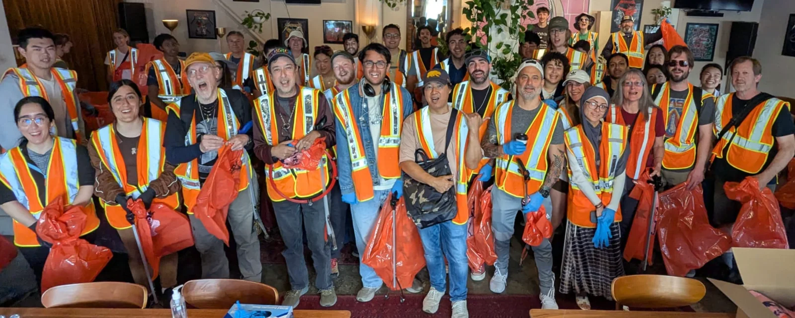
This was also a special trash pickup because I got “The Pickeballer” to come out today which I wasn’t expecting! Today I was joined by “The Pickeballer”, “The Quant”, “The Ravenkeeper”, “Fortnight mocap dancer”, “The Yogi”, and of course “The notetaker”.
Originally I had a goal after trash pickup of trying to redeem every reward I could get but unfortunately I failed this goal as I didn’t have the stomach space for all the free food. A more achievable version of this goal may have been to have a group of friends go and do it such that between the group every reward is redeemed. Between all of us though we do manage to get through Mannys brunch, Pupusa, Ritual, Boogaloo, Senor Sisig, and Beehive which isn’t bad. We would have done Arcana as well but they were closed.
After a long post trash pickup hang I head home and do some work. Unfortunately I do have a deadline coming up relatively soon so I prioritized over the newsletter.